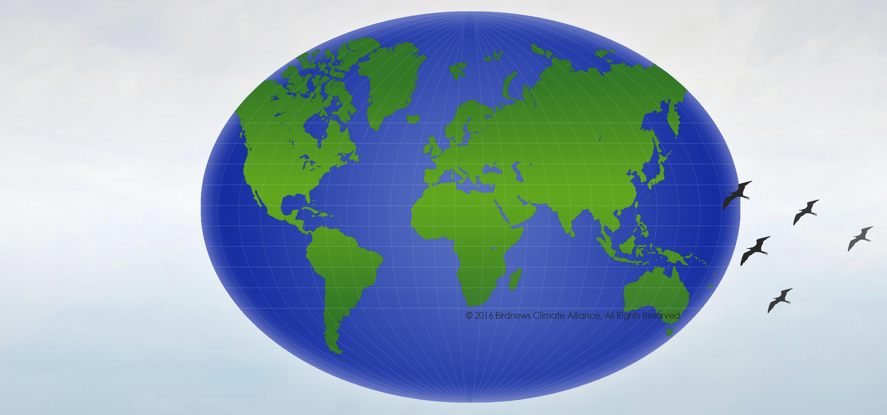

"Protecting The Earth Begins Today"
Birdnews Climate Alliance works to promote solutions that protect the envronment. BCA mobilizes private and public investor to build a thriving economy in which long-term environmental and social risks are incorporated. BCA works with key players in the economy to promote clean and safe environment and also to advance sustainable solutions that will reduce pollutions, protect vital natural resources and ensure safe and just conditions for everyone affected by climate change. BCA brings people together to work on climate change impacts and policies around the world and to coordinate their collective work on this issue to ensure clean and safe environment.
Birdnews Climate Alliance is Global!
Birdnews Climate Alliance (BCA) is an international non-profit organization. BCA brings together people who want a clean and safe environment and cares about how a changing climate affects humans, plants, wildlife and our planet. BCA believes that it is very important to invest in sustainable solutions now to keep our families and communities safe, especially when solutions are affordable. We work to advance solutions to manage climate change through sustainable and equitable development.
Birdnews Climate Alliance (BCA) brings people together to work on climate change impacts and policies around the world and to coordinate their collective work on this issue to maximize their collective impact. BCA is unique in the climate movement because it is an organization with a mandate to promote the clean and safe environment.
Members and volunteers make it possible to do what we do. Whether you have lot of time to offer or can just help out occasionally, we've got something for you.Demian and Kate